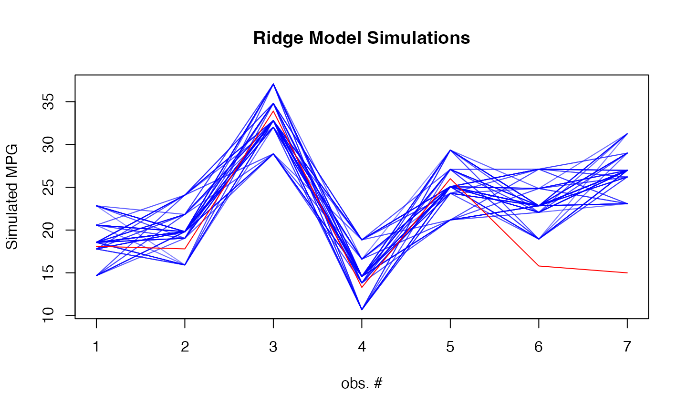
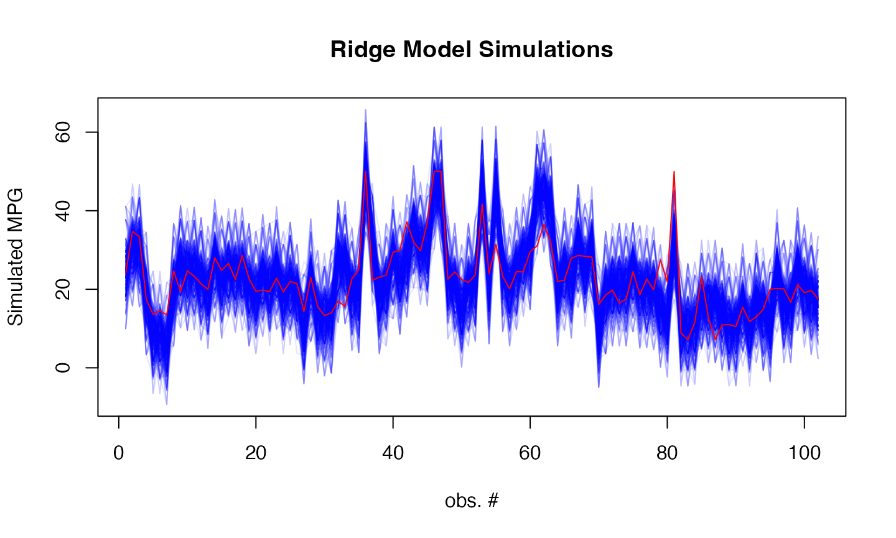

nnet.Rmd
library(rvfl)
nnetModel <- function(formula, ...) {
nnet::nnet(formula = formula,
linout = TRUE,
size = 10,
maxit = 100,
...)
}
# Fit regular linear model
start <- proc.time()[3]
lm_model <- lm(mpg ~ ., data = train_data)
print(proc.time()[3] - start)## elapsed
## 0.013##
## Call:
## lm(formula = mpg ~ ., data = train_data)
##
## Residuals:
## Min 1Q Median 3Q Max
## -3.5211 -0.9792 -0.0324 1.1808 4.9814
##
## Coefficients:
## Estimate Std. Error t value Pr(>|t|)
## (Intercept) -5.054416 25.456900 -0.199 0.8455
## cyl 0.695392 1.396506 0.498 0.6262
## disp 0.005254 0.017342 0.303 0.7664
## hp -0.007610 0.027723 -0.274 0.7877
## drat 4.128157 2.724353 1.515 0.1520
## wt -1.621396 2.139071 -0.758 0.4610
## qsec 0.064356 0.932144 0.069 0.9459
## vs 0.138716 3.421183 0.041 0.9682
## am -0.498476 2.956568 -0.169 0.8685
## gear 4.402648 2.287816 1.924 0.0749 .
## carb -1.999389 1.299580 -1.538 0.1462
## ---
## Signif. codes: 0 '***' 0.001 '**' 0.01 '*' 0.05 '.' 0.1 ' ' 1
##
## Residual standard error: 2.464 on 14 degrees of freedom
## Multiple R-squared: 0.8938, Adjusted R-squared: 0.818
## F-statistic: 11.79 on 10 and 14 DF, p-value: 3.4e-05
#print(confint(lm_model))
# Fit calibrated model
start <- proc.time()[3]
ridge_model <- rvfl::calibmodel(lambda=10**seq(-10, 10, length.out=100), x = as.matrix(train_data[,-1]), y = train_data$mpg, engine = nnetModel)## # weights: 121
## initial value 473.213215
## iter 10 value 43.483667
## iter 20 value 14.433163
## iter 30 value 2.574259
## iter 40 value 0.066823
## final value 0.000063
## converged## elapsed
## 0.056## a 10-10-1 network with 121 weights
## options were - linear output units
## b->h1 i1->h1 i2->h1 i3->h1 i4->h1 i5->h1 i6->h1 i7->h1 i8->h1 i9->h1
## 0.85 0.91 -0.21 -3.23 0.20 2.49 -6.12 2.16 -0.83 0.64
## i10->h1
## -0.53
## b->h2 i1->h2 i2->h2 i3->h2 i4->h2 i5->h2 i6->h2 i7->h2 i8->h2 i9->h2
## 2.08 0.02 2.32 2.75 0.94 -1.56 0.02 0.20 -2.14 -2.14
## i10->h2
## -3.40
## b->h3 i1->h3 i2->h3 i3->h3 i4->h3 i5->h3 i6->h3 i7->h3 i8->h3 i9->h3
## -6.13 -1.82 -0.67 -2.07 -0.20 -1.27 -0.04 -0.89 -0.85 0.02
## i10->h3
## -4.78
## b->h4 i1->h4 i2->h4 i3->h4 i4->h4 i5->h4 i6->h4 i7->h4 i8->h4 i9->h4
## 1.88 4.51 -1.02 -0.34 -0.80 -4.02 3.06 0.49 -1.96 -3.93
## i10->h4
## -6.29
## b->h5 i1->h5 i2->h5 i3->h5 i4->h5 i5->h5 i6->h5 i7->h5 i8->h5 i9->h5
## -4.25 -0.41 2.44 -0.29 5.04 4.19 1.10 0.49 1.51 2.79
## i10->h5
## -0.49
## b->h6 i1->h6 i2->h6 i3->h6 i4->h6 i5->h6 i6->h6 i7->h6 i8->h6 i9->h6
## -1.13 -0.84 -1.86 -1.68 0.01 -1.40 -1.68 0.53 -0.78 -0.72
## i10->h6
## -0.24
## b->h7 i1->h7 i2->h7 i3->h7 i4->h7 i5->h7 i6->h7 i7->h7 i8->h7 i9->h7
## -3.29 1.06 1.44 4.01 2.83 -1.92 -1.72 1.31 -1.44 0.34
## i10->h7
## -1.14
## b->h8 i1->h8 i2->h8 i3->h8 i4->h8 i5->h8 i6->h8 i7->h8 i8->h8 i9->h8
## -4.25 1.98 -3.70 -1.44 2.12 5.11 1.61 -0.72 4.36 1.31
## i10->h8
## 2.18
## b->h9 i1->h9 i2->h9 i3->h9 i4->h9 i5->h9 i6->h9 i7->h9 i8->h9 i9->h9
## 0.55 2.19 1.36 1.28 8.44 2.56 -1.75 1.23 2.11 0.17
## i10->h9
## -0.83
## b->h10 i1->h10 i2->h10 i3->h10 i4->h10 i5->h10 i6->h10 i7->h10
## -0.22 1.02 -1.88 0.41 2.04 -0.21 3.07 0.24
## i8->h10 i9->h10 i10->h10
## 1.27 -1.60 -3.29
## b->o h1->o h2->o h3->o h4->o h5->o h6->o h7->o h8->o h9->o h10->o
## -3.75 -4.89 -4.58 4.07 8.07 3.22 3.06 4.75 4.56 2.44 -5.35
##print(confint(ridge_model))
#print(simulate(ridge_model, newdata = test_data))
lm_pred <- predict(lm_model, newdata = test_data, interval = "prediction")
ridge_pred <- predict(ridge_model, newdata = as.matrix(test_data), method="surrogate")## Registered S3 method overwritten by 'quantmod':
## method from
## as.zoo.data.frame zoo
results <- data.frame(
Actual = mtcars[-train_idx, ]$mpg,
LM_Pred = lm_pred[,"fit"],
LM_Lower = lm_pred[,"lwr"],
LM_Upper = lm_pred[,"upr"],
Ridge_Pred = ridge_pred[,"fit"],
Ridge_Lower = ridge_pred[,"lwr"],
Ridge_Upper = ridge_pred[,"upr"]
)
# Print results
print("Prediction Intervals Comparison:")## [1] "Prediction Intervals Comparison:"## Actual LM_Pred LM_Lower LM_Upper Ridge_Pred Ridge_Lower
## Valiant 18.1 17.93324 10.149847 25.71663 18.55016 14.67114
## Merc 280C 17.8 20.63530 13.636618 27.63398 19.80226 15.92324
## Toyota Corolla 33.9 28.58373 22.379666 34.78779 32.77860 28.89958
## Camaro Z28 13.3 15.85710 8.140858 23.57335 14.57393 10.69491
## Porsche 914-2 26.0 31.07535 18.988702 43.16201 25.05885 21.17983
## Ford Pantera L 15.8 27.07516 14.930150 39.22016 22.82828 18.94926
## Ridge_Upper
## Valiant 22.83238
## Merc 280C 24.08449
## Toyota Corolla 37.06082
## Camaro Z28 18.85615
## Porsche 914-2 29.34107
## Ford Pantera L 27.11050
# Calculate coverage and Winkler scores
lm_coverage <- mean(mtcars[-train_idx, ]$mpg >= results$LM_Lower &
mtcars[-train_idx, ]$mpg <= results$LM_Upper)
ridge_coverage <- mean(mtcars[-train_idx, ]$mpg >= results$Ridge_Lower &
mtcars[-train_idx, ]$mpg <= results$Ridge_Upper)
lm_winkler <- misc::winkler_score(mtcars[-train_idx, ]$mpg, results$LM_Lower, results$LM_Upper)
ridge_winkler <- misc::winkler_score(mtcars[-train_idx, ]$mpg, results$Ridge_Lower, results$Ridge_Upper)
print(sprintf("\nPrediction interval metrics:"))## [1] "\nPrediction interval metrics:"
print(sprintf("Linear Model: %.1f%% coverage, %.3f Winkler score",
100 * lm_coverage, mean(lm_winkler)))## [1] "Linear Model: 100.0% coverage, 18.226 Winkler score"
print(sprintf("Calibrated Model: %.1f%% coverage, %.3f Winkler score",
100 * ridge_coverage, mean(ridge_winkler)))## [1] "Calibrated Model: 71.4% coverage, 72.362 Winkler score"
sims <- simulate(ridge_model, newdata = as.matrix(test_data), nsim = 500, method="surrogate")
# Plot simulations
matplot(sims, type = "l",
col = rgb(0, 0, 1, 0.1), lty = 1,
xlab = "obs. #", ylab = "Simulated MPG",
main = "Ridge Model Simulations")
lines(mtcars[-train_idx, ]$mpg, col = "red") 
# Fit regular linear model
start <- proc.time()[3]
lm_model <- lm(medv ~ ., data = train_data)
print(proc.time()[3] - start)## elapsed
## 0.009## medv crim zn indus
## Min. : 5.00 Min. : 0.00906 Min. : 0.00 Min. : 1.210
## 1st Qu.:16.77 1st Qu.: 0.08260 1st Qu.: 0.00 1st Qu.: 5.287
## Median :20.90 Median : 0.26888 Median : 0.00 Median : 9.690
## Mean :22.45 Mean : 3.83730 Mean : 11.54 Mean :11.227
## 3rd Qu.:25.00 3rd Qu.: 3.79366 3rd Qu.: 12.50 3rd Qu.:18.100
## Max. :50.00 Max. :88.97620 Max. :100.00 Max. :27.740
## chas nox rm age
## Min. :0.00000 Min. :0.3850 Min. :3.863 Min. : 2.90
## 1st Qu.:0.00000 1st Qu.:0.4490 1st Qu.:5.884 1st Qu.: 44.23
## Median :0.00000 Median :0.5380 Median :6.185 Median : 78.60
## Mean :0.07673 Mean :0.5555 Mean :6.287 Mean : 68.82
## 3rd Qu.:0.00000 3rd Qu.:0.6240 3rd Qu.:6.626 3rd Qu.: 94.33
## Max. :1.00000 Max. :0.8710 Max. :8.780 Max. :100.00
## dis rad tax ptratio
## Min. : 1.130 Min. : 1.000 Min. :187.0 Min. :12.60
## 1st Qu.: 2.070 1st Qu.: 4.000 1st Qu.:279.0 1st Qu.:17.40
## Median : 3.216 Median : 5.000 Median :330.0 Median :19.10
## Mean : 3.797 Mean : 9.668 Mean :409.8 Mean :18.47
## 3rd Qu.: 5.234 3rd Qu.:24.000 3rd Qu.:666.0 3rd Qu.:20.20
## Max. :12.127 Max. :24.000 Max. :711.0 Max. :22.00
## black lstat
## Min. : 0.32 Min. : 1.730
## 1st Qu.:374.53 1st Qu.: 7.107
## Median :391.56 Median :11.430
## Mean :354.65 Mean :12.792
## 3rd Qu.:396.35 3rd Qu.:17.102
## Max. :396.90 Max. :37.970
#print(confint(lm_model$model))
# Fit calibrated model
start <- proc.time()[3]
ridge_model <- rvfl::calibmodel(lambda=10**seq(-10, 10, length.out=100), x = as.matrix(train_data[,-14]), y = train_data$medv, engine = nnetModel)## # weights: 151
## initial value 16880.769624
## iter 10 value 6192.445129
## iter 20 value 4515.206735
## iter 30 value 3683.356748
## iter 40 value 2784.082812
## iter 50 value 2144.441730
## iter 60 value 1759.937550
## iter 70 value 1523.434902
## iter 80 value 1336.937560
## iter 90 value 1250.249990
## iter 100 value 1149.247897
## final value 1149.247897
## stopped after 100 iterations## elapsed
## 0.188## a 13-10-1 network with 151 weights
## options were - linear output units
## b->h1 i1->h1 i2->h1 i3->h1 i4->h1 i5->h1 i6->h1 i7->h1 i8->h1 i9->h1
## -14.67 -2.88 0.63 17.16 -2.58 -8.65 -6.53 5.55 -3.17 5.70
## i10->h1 i11->h1 i12->h1 i13->h1
## 0.82 -9.69 -7.18 8.75
## b->h2 i1->h2 i2->h2 i3->h2 i4->h2 i5->h2 i6->h2 i7->h2 i8->h2 i9->h2
## -11.87 -5.60 -5.78 -4.51 4.54 3.31 -14.66 5.35 13.36 -14.73
## i10->h2 i11->h2 i12->h2 i13->h2
## 5.56 -4.55 25.81 -3.95
## b->h3 i1->h3 i2->h3 i3->h3 i4->h3 i5->h3 i6->h3 i7->h3 i8->h3 i9->h3
## 10.15 8.06 11.97 7.49 -7.27 3.99 -13.43 8.57 -7.03 3.21
## i10->h3 i11->h3 i12->h3 i13->h3
## -3.73 15.16 -1.48 6.03
## b->h4 i1->h4 i2->h4 i3->h4 i4->h4 i5->h4 i6->h4 i7->h4 i8->h4 i9->h4
## 24.97 0.01 -3.02 -2.23 0.06 -9.78 -8.98 6.37 3.49 -1.94
## i10->h4 i11->h4 i12->h4 i13->h4
## -10.59 5.60 -8.59 19.59
## b->h5 i1->h5 i2->h5 i3->h5 i4->h5 i5->h5 i6->h5 i7->h5 i8->h5 i9->h5
## -8.54 -1.46 -4.95 5.78 -4.06 0.24 4.20 0.72 8.25 8.92
## i10->h5 i11->h5 i12->h5 i13->h5
## -3.66 3.88 -2.71 12.12
## b->h6 i1->h6 i2->h6 i3->h6 i4->h6 i5->h6 i6->h6 i7->h6 i8->h6 i9->h6
## -16.95 3.90 -5.68 15.67 -7.68 9.73 -14.79 7.58 -7.93 2.81
## i10->h6 i11->h6 i12->h6 i13->h6
## -0.40 2.80 -15.12 -5.80
## b->h7 i1->h7 i2->h7 i3->h7 i4->h7 i5->h7 i6->h7 i7->h7 i8->h7 i9->h7
## -11.34 -7.66 -6.13 14.97 1.31 6.07 17.81 4.55 12.29 24.28
## i10->h7 i11->h7 i12->h7 i13->h7
## -5.31 -4.36 11.80 -15.07
## b->h8 i1->h8 i2->h8 i3->h8 i4->h8 i5->h8 i6->h8 i7->h8 i8->h8 i9->h8
## -5.64 0.66 -1.55 -0.25 7.24 -4.61 9.85 -3.13 6.69 -1.28
## i10->h8 i11->h8 i12->h8 i13->h8
## 0.25 -10.46 2.41 -15.89
## b->h9 i1->h9 i2->h9 i3->h9 i4->h9 i5->h9 i6->h9 i7->h9 i8->h9 i9->h9
## -12.32 0.58 -0.49 5.28 -0.36 -11.51 4.88 8.91 6.32 12.47
## i10->h9 i11->h9 i12->h9 i13->h9
## -3.16 5.97 -5.53 -21.79
## b->h10 i1->h10 i2->h10 i3->h10 i4->h10 i5->h10 i6->h10 i7->h10
## -12.20 6.02 6.30 -3.90 -4.72 4.75 8.16 -7.40
## i8->h10 i9->h10 i10->h10 i11->h10 i12->h10 i13->h10
## -0.14 21.44 22.96 1.29 -3.86 -12.85
## b->o h1->o h2->o h3->o h4->o h5->o h6->o h7->o h8->o h9->o h10->o
## 22.10 8.47 -5.72 -7.72 -12.22 -10.50 -8.60 5.99 -5.76 4.00 -3.33
results <- data.frame(
Actual = Boston[-train_idx, ]$medv,
LM_Pred = lm_pred[,"fit"],
LM_Lower = lm_pred[,"lwr"],
LM_Upper = lm_pred[,"upr"],
Ridge_Pred = ridge_pred[,"fit"],
Ridge_Lower = ridge_pred[,"lwr"],
Ridge_Upper = ridge_pred[,"upr"]
)
# Print results
print("Prediction Intervals Comparison:")## [1] "Prediction Intervals Comparison:"## Actual LM_Pred LM_Lower LM_Upper Ridge_Pred Ridge_Lower Ridge_Upper
## 1 24.0 30.57209 20.958399 40.18579 25.015585 13.865132 32.88356
## 3 34.7 30.68339 21.107377 40.25940 30.666524 19.731158 38.32934
## 4 33.4 28.70511 19.107688 38.30253 30.603229 19.886106 43.35492
## 18 17.5 17.06191 7.487523 26.63630 18.479224 6.926736 26.27463
## 21 13.6 12.85420 3.239688 22.46872 8.780210 -2.179932 21.28888
## 24 14.5 14.14956 4.535627 23.76348 8.583018 -1.909620 16.15037
# Calculate coverage and Winkler scores
lm_coverage <- mean(Boston[-train_idx, ]$medv >= results$LM_Lower &
Boston[-train_idx, ]$medv <= results$LM_Upper)
ridge_coverage <- mean(Boston[-train_idx, ]$medv >= results$Ridge_Lower &
Boston[-train_idx, ]$medv <= results$Ridge_Upper)
lm_winkler <- misc::winkler_score(Boston[-train_idx, ]$medv, results$LM_Lower, results$LM_Upper)
ridge_winkler <- misc::winkler_score(Boston[-train_idx, ]$medv, results$Ridge_Lower, results$Ridge_Upper)
print(sprintf("\nPrediction interval metrics:"))## [1] "\nPrediction interval metrics:"
print(sprintf("Linear Model: %.1f%% coverage, %.3f Winkler score",
100 * lm_coverage, mean(lm_winkler)))## [1] "Linear Model: 95.1% coverage, 26.711 Winkler score"
print(sprintf("Calibrated Model: %.1f%% coverage, %.3f Winkler score",
100 * ridge_coverage, mean(ridge_winkler)))## [1] "Calibrated Model: 94.1% coverage, 27.920 Winkler score"
sims <- simulate(ridge_model, newdata = as.matrix(test_data), nsim = 500, method="surrogate")
# Plot simulations
matplot(sims, type = "l",
col = rgb(0, 0, 1, 0.1), lty = 1,
xlab = "obs. #", ylab = "Simulated MPG",
main = "Ridge Model Simulations")
lines(Boston[-train_idx, ]$medv, col = "red") 